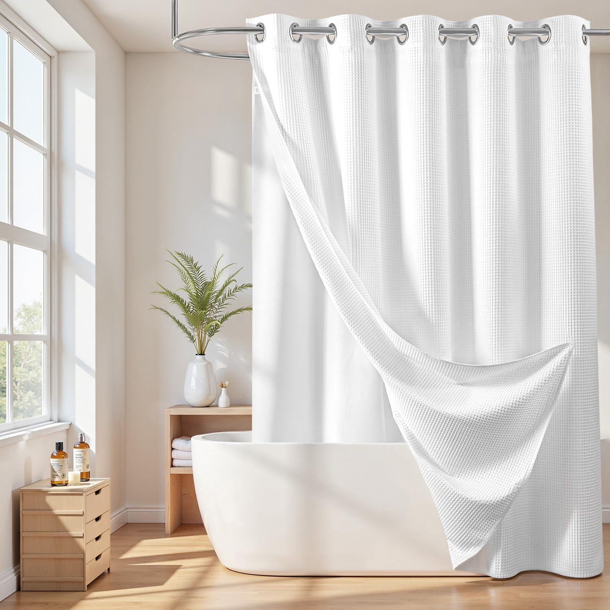

Best Shower Curtains for Clawfoot Tubs: The Complete Guide
Finding the right shower curtain for a clawfoot tub is not the same as shopping for a standard shower. Clawfoot tubs are freestanding with no walls to contain water, which means you need a wraparound curtain that encircles the entire tub. In this guide, we review 6 of the best clawfoot tub shower curtains for 2026 — covering waffle weave fabric, heavy-duty PEVA, and cotton-polyester blends — so you can enjoy your vintage tub without flooding the bathroom floor.

Ilane Tall
Product Researcher | Specializing in bathroom products and home textiles
Published March 25, 2026 | All recommendations based on rigorous product research and customer review analysis.
Quick Answer: What Makes a Good Clawfoot Tub Shower Curtain?
A clawfoot tub shower curtain must be extra-wide (180 inches) to wrap all the way around the freestanding tub. Look for heavy-weighted fabric or PEVA with magnets to prevent billowing, water-repellent material for splash protection, and a curtain that includes 36 hooks for the oval ceiling-mounted rod. Our top pick is the Barossa Design Waffle Weave Clawfoot Tub Shower Curtain for its full 180x70-inch coverage, weighted hem, and premium waffle weave fabric.
Barossa Design Waffle Weave Clawfoot Tub Shower Curtain 180 x 70 Inch
180x70 wraparound, heavy-weighted waffle weave fabric, water repellent, includes 36 hooks, machine washable

How to Choose a Shower Curtain for a Clawfoot Tub
Shopping for a clawfoot tub shower curtain requires a different approach than buying a standard curtain. Clawfoot tubs sit away from the wall, exposing all sides to water spray. This means your curtain must provide 360-degree coverage — and that changes everything about the size, material, and hardware you need. Here is what to consider before buying.
Size: Why 180 Inches Is the Standard
Standard shower curtains are 72 inches wide, designed for wall-to-wall installations. Clawfoot tubs need curtains that are 180 inches wide (15 feet) to wrap entirely around an oval ceiling-mounted rod. The height is typically 70 inches rather than the standard 72, because the curtain hangs from a ceiling rod that sits higher than a wall-mounted bar. If you are unsure about sizing, our guide on how to choose the right shower curtain size covers measuring techniques for non-standard installations.
Material: Fabric vs. PEVA for Clawfoot Tubs
Clawfoot tub curtains come in two primary materials. Polyester fabric (especially waffle weave) offers superior aesthetics, weighted draping, and durability — ideal for vintage bathrooms where style matters. PEVA plastic provides maximum waterproofing at a lower cost, though it lacks the premium feel. Many clawfoot tub owners use both: a decorative fabric curtain on the outside and a waterproof liner on the inside.
Weight: Stopping the Billow Effect
Because clawfoot curtains hang from an oval rod in open space, they are far more prone to billowing than wall-mounted curtains. Look for curtains with weighted hems, bottom magnets, or heavy-duty fabric (200+ GSM). A curtain that blows inward during your shower defeats the purpose of full coverage and creates a frustrating experience.
Hardware: Hooks, Rings, and Rods
Clawfoot tub curtains require 36 hooks or rings (triple the standard 12) to span the oval rod. Most dedicated clawfoot curtains include these hooks in the package. You will also need a ceiling-mounted oval shower curtain rod or a freestanding shower frame. Some oval rods are adjustable to fit different tub lengths. Rust-resistant materials like stainless steel or nickel are essential in the humid shower environment. For ring options, see our guide on the best shower curtain hooks and rings.
Top 6 Best Shower Curtains for Clawfoot Tubs (2026)
1. Barossa Design Waffle Weave Clawfoot Tub Shower Curtain 180 x 70 Inch
The Barossa Design Waffle Weave is our top pick for clawfoot tubs. This 180x70-inch wraparound curtain covers the entire tub perimeter with a premium waffle weave polyester fabric that looks right at home with vintage clawfoot aesthetics. The heavy-weighted hem prevents billowing, and the water-repellent finish keeps splashes contained without needing a separate liner. It ships with a complete set of 36 rust-resistant hooks.
Pros
- Full 180-inch wraparound coverage
- Heavy weighted hem stops billowing
- Water-repellent waffle weave fabric
- 36 rust-resistant hooks included
- Machine washable
Cons
- Higher price point than PEVA options
- May need a liner for heavy water pressure
- Limited color selection
2. N&Y HOME Clawfoot Tub Shower Curtain 180 x 70 Inch PEVA Liner
The N&Y HOME PEVA clawfoot tub curtain delivers reliable waterproofing at a budget-friendly price. Made from heavy-duty 8G PEVA (not PVC), this 180x70-inch wraparound liner is non-toxic, odorless, and fully waterproof straight out of the package. The bottom magnets help it cling to the tub's iron surface, providing excellent splash protection. Ideal as a standalone waterproof option or as an inner liner paired with a decorative fabric curtain.
Pros
- 100% waterproof PEVA material
- Non-toxic and PVC-free
- Bottom magnets grip cast iron tubs
- Affordable price point
- 36 rustproof grommets
Cons
- Plastic look — not as elegant as fabric
- Can stick to skin when wet
- Shorter lifespan than fabric options

3. Barossa Design Cotton Blend Clawfoot Tub Shower Curtain with Snap-In Liner
For clawfoot tub owners who want the elegance of cotton without sacrificing waterproofing, the Barossa Design Cotton Blend system pairs a decorative outer curtain with a snap-in PEVA liner. The cotton-polyester blend drapes beautifully and feels premium to the touch, while the removable liner handles all the water containment. The snap-in design means you can detach the liner for cleaning without removing the outer curtain from the rings.
Pros
- Two-in-one system: fabric + waterproof liner
- Snap-in liner detaches for easy cleaning
- Premium cotton-blend feel and drape
- Weighted hem on both layers
- Elegant vintage look
Cons
- Higher price due to two-layer system
- Cotton outer requires more frequent washing
- Heavier weight on the curtain rod

4. AmazerBath Heavy Duty PEVA Clawfoot Tub Shower Curtain 180 x 70
The AmazerBath Heavy Duty PEVA liner is built for maximum water containment. At 12-gauge thickness — significantly heavier than standard 6G or 8G liners — this curtain hangs straight and resists billowing without additional weights. The 3 built-in magnets at the bottom create a strong seal against cast iron clawfoot tubs. Reinforced rustproof grommets prevent tearing at the hook points, which is critical given the longer span of a 180-inch curtain.
Pros
- Extra-thick 12G PEVA for superior waterproofing
- 3 built-in magnets for cast iron tub grip
- Reinforced rust-proof grommets
- Heavy enough to resist billowing
- Non-toxic and odorless
Cons
- Clear/frosted only — no decorative appeal
- Heavier weight may stress lightweight rods
- Cannot be machine washed

5. ALYVIA SPRING Waterproof Fabric Clawfoot Tub Shower Curtain 180 x 70
The ALYVIA SPRING brings hotel-quality waterproof fabric to the clawfoot tub format. Unlike standard fabric curtains that need a separate liner, this one is inherently water-repellent thanks to its treated polyester construction. The soft, cloth-like feel is a significant upgrade from PEVA while still providing reliable splash protection. Three magnets at the bottom hem keep the curtain close to the tub, and the lightweight construction means less stress on your ceiling-mounted rod.
Pros
- Water-repellent fabric — no liner needed
- Soft, hotel-quality feel
- 3 bottom magnets for tub grip
- Lightweight — easy on ceiling rods
- Multiple color options
Cons
- Not 100% waterproof like PEVA
- Water repellency may fade over time
- Needs regular washing to prevent mildew

6. LiBa Clawfoot Tub PEVA Shower Curtain Liner 180 x 70 Waterproof
The LiBa PEVA shower curtain has earned its reputation as one of the most-reviewed bathroom products on Amazon, and for good reason. The clawfoot tub version extends that reliability to a full 180x70-inch wraparound format. Made from premium 8G PEVA, it delivers solid waterproofing without the chemical smell associated with cheaper PVC curtains. Rust-proof grommets and a clean, translucent design make it a practical everyday choice for clawfoot tub owners who prioritize function over fashion.
Pros
- Most affordable clawfoot tub option
- Non-toxic PEVA — no chemical smell
- Rust-proof metal grommets
- Over 42,000 verified reviews
- Easy to replace when worn
Cons
- Thinner than 12G alternatives
- No magnets — may billow slightly
- Basic appearance — decorative curtain recommended

Quick Comparison: All 6 Clawfoot Tub Curtains
| Product | Material | Size | Price | Best For |
|---|---|---|---|---|
| Barossa Design Waffle Weave | Polyester Waffle | 180x70 | $45.99 | Overall best |
| N&Y HOME PEVA Liner | 8G PEVA | 180x70 | $25.99 | Budget waterproof |
| Barossa Cotton Blend + Liner | Cotton-Poly + PEVA | 180x70 | $52.99 | Luxury two-in-one |
| AmazerBath Heavy Duty | 12G PEVA | 180x70 | $29.99 | Max waterproofing |
| ALYVIA SPRING Fabric | Waterproof Polyester | 180x70 | $35.99 | All-in-one fabric |
| LiBa PEVA Liner | 8G PEVA | 180x70 | $22.99 | Best value |
Barossa Waffle Weave
Best For: Overall quality
Price: $45.99
Key Strength: Premium fabric + anti-billow
EDITOR'S CHOICE
ALYVIA SPRING Fabric
Best For: Fabric + waterproof
Price: $35.99
Key Strength: No liner needed
BEST MID-RANGE
LiBa PEVA
Best For: Budget shoppers
Price: $22.99
Key Strength: Proven reliability
BEST VALUE
How to Install a Shower Curtain on a Clawfoot Tub
Installing a shower curtain on a clawfoot tub is more involved than a standard wall-to-wall setup, but the process is straightforward once you understand the components. Here is a step-by-step overview.
Step 1: Choose Your Rod Type
You have two main options for clawfoot tub curtain rods. Ceiling-mounted oval rods attach to the ceiling above your tub and create a clean, integrated look — this is the most popular choice. Freestanding curtain frames sit on the floor around the tub and require no ceiling mounting, which is ideal for rental properties. Both types should be made from rust-resistant materials like stainless steel, chrome, or brushed nickel.
Step 2: Mount the Rod
For ceiling-mounted rods, locate the ceiling joists above your tub (a stud finder helps). The rod should hang so that the bottom of the curtain sits about 6 inches inside the tub rim. Mark your mounting points, drill pilot holes, and secure the rod brackets into the joists. If your ceiling is high, you may need longer drop supports. For extra-long curtains, see our guide on extra-long shower curtains.
Step 3: Hang the Curtain
Thread all 36 hooks through the curtain grommets, then hang them on the oval rod. Space the hooks evenly around the entire perimeter. The curtain should overlap at one section to prevent gaps. Test the curtain by running the shower and checking for any spots where water escapes. Adjust hook spacing as needed to eliminate gaps.
Step 4: Add a Liner (Optional)
If you are using a decorative fabric curtain, hang a waterproof PEVA liner on the inside using the same hooks (double hooks work well for this). The liner should hang inside the tub while the decorative curtain hangs outside. This two-layer approach provides both style and full water containment.
Clawfoot Tub Shower Curtain Materials: What Works Best
The material you choose for your clawfoot tub shower curtain affects everything from waterproofing to aesthetics to longevity. Here is how the main options compare specifically for clawfoot tub use.
Waffle Weave Polyester
Waffle weave polyester is the top choice for clawfoot tubs because it combines the classic vintage aesthetic with practical performance. The textured weave adds visual interest, the heavy weight resists billowing, and the polyester construction is naturally water-resistant. Most waffle weave curtains can be machine washed, making maintenance simple. The fabric also drapes beautifully around the oval rod, creating an elegant enclosure. For more waffle weave options, see our luxury hotel-style shower curtains guide.
Heavy-Duty PEVA
PEVA (polyethylene vinyl acetate) is the waterproofing workhorse. Unlike PVC, PEVA is non-toxic and free of chlorine and harmful phthalates. For clawfoot tubs, look for 8G or 12G thickness — thicker gauges hang straighter and resist billowing better. PEVA liners are also the most affordable option, making them ideal for budget-conscious buyers or as a replaceable inner liner.
Cotton and Cotton Blends
Pure cotton and cotton-polyester blends offer the most luxurious look and feel for clawfoot tubs. The natural drape of cotton complements the vintage character of clawfoot tubs perfectly. However, cotton is not inherently waterproof, so these curtains almost always need a separate waterproof liner. The extra cost and maintenance are worthwhile for owners who prioritize aesthetics above all else.
Frequently Asked Questions About Clawfoot Tub Shower Curtains
What size shower curtain do I need for a clawfoot tub?
Most clawfoot tubs require a wraparound shower curtain that is 180 inches wide by 70 inches tall. This extra-wide size wraps completely around the tub's open design, providing 360-degree coverage. Standard 72x72 curtains are too narrow and will leave gaps that let water escape onto the floor. Always measure your oval rod's circumference before purchasing to ensure a proper fit.
Can I use a regular shower curtain on a clawfoot tub?
You can technically use a regular shower curtain, but it will not provide adequate coverage. Standard 72-inch curtains only cover one side, leaving the ends of the tub exposed. For proper water containment, you need a dedicated clawfoot tub shower curtain (typically 180 inches wide) paired with an oval or D-shaped shower curtain ring that mounts to the ceiling.
Do clawfoot tub shower curtains need a special rod?
Yes. Clawfoot tubs require either a ceiling-mounted oval shower curtain rod or a freestanding shower curtain frame. The rod encircles the entire tub, and the curtain hangs from rings all the way around. Most wraparound curtains come with 36 hooks or rings to accommodate the longer rod length. Standard straight tension rods will not work for clawfoot tubs.
How do I prevent my clawfoot tub shower curtain from billowing inward?
Choose a curtain with a weighted hem or magnets at the bottom to keep it from blowing inward. Heavier fabrics like waffle weave polyester (200+ GSM) also resist billowing better than lightweight PEVA liners. Some users add shower curtain weights or clips to the bottom hem for extra hold. Running the bathroom exhaust fan can also reduce the pressure differential that causes billowing.
How many hooks do I need for a clawfoot tub shower curtain?
Most clawfoot tub shower curtains require 36 hooks or rings, compared to the standard 12 used for regular shower curtains. This is because the curtain wraps around the entire oval rod. Many clawfoot-specific curtains include the full set of 36 hooks in the package — always check before purchasing separately.
The Bottom Line: Which Clawfoot Tub Curtain Should You Buy?
Choosing the best shower curtain for your clawfoot tub depends on whether you prioritize style, waterproofing, or value. Here is our final recommendation based on each priority.
For the best overall experience, the Barossa Design Waffle Weave at $45.99 delivers premium aesthetics, full wraparound coverage, and a weighted hem that stops billowing — all in one machine-washable package. It is the gold standard for clawfoot tub shower curtains.
For maximum waterproofing on a budget, the LiBa PEVA Liner at $22.99 offers proven reliability backed by over 42,000 reviews. Pair it with any decorative curtain for a complete setup.
For luxury without compromise, the Barossa Cotton Blend with Snap-In Liner at $52.99 gives you the elegance of cotton fabric with built-in waterproof protection — no separate liner purchase required.
Whichever option you choose, the key to a successful clawfoot tub shower setup is proper sizing (180 inches wide), a quality ceiling-mounted oval rod, and enough hooks (36) to eliminate gaps. With the right curtain in place, your vintage clawfoot tub becomes a fully functional shower that keeps your bathroom floor dry and your decor on point.
COMPLETE YOUR BATHROOM
Best Bath Rugs 2026
Memory foam mats + non-slip safety + expert guide
ExploreComplete Your Bathroom Upgrade
Our network of expert review sites covers every bathroom essential: